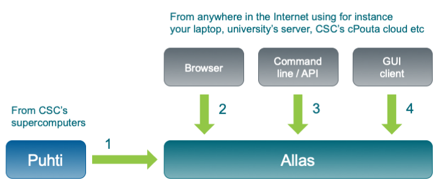

Allas – object storage#
What it is?
Allas is a storage service, technically object storage
For CSC project lifetime: 1-5 years
Capacity: 10 - 200 Tb for free, more with contract
Accessible from CSC computing services, own laptop or other servers
Private data - access for project members only
Possibility to make data public or share with other CSC project
For computation the data has to typically be copied to the computing environment
LUMI-O is very similar to Allas
What it is NOT?
A file system (even though many tools try to fool you to think so). It is just a place to store static data objects.
A data management environment. Tools for etc. search, metadata, version control and access management are minimal.
A foolproof back up service. Project members can delete all the data with just one command.

Allas terminology#
Access to Allas is provided per CSC project
All project members have equal rights to the data, everybody can add and delete.
Main data unit is buckets
Name of the bucket must be unique within Allas
For data organization and access administration
Data is stored as objects within a bucket
Practically: object = file
In reality, there is no hierarcical directory structure within a bucket, although it sometimes looks like that.
Object name can be
/data/myfile.zipand some tools may display it asdatafolder withmyfile.zipfile.
Things to consider#
Should each file be stored as a separate object or should I collect it into bigger chunks?
Depends how you want to use the data later, access to single files or not.
Compression?
What will happen to the data later on?
Allas APIs#
S3 and SWIFT.
For new projects S3 is recommended
SWIFT might be soon depricated.
Avoid cross-using SWIFT and S3 based objects!
Tools for Allas#
Web interfaces:
cPouta, soon also Puhti and Mahti web interface
cPouta web interface -> object store -> containers
See what data is in Allas, upload/download of single files.
Log in with CSC username and password
Graphical tools:
S3 browser, Cyberduck, WinSCP
For medium amounts of data, < 1 Tb.
Very easy, but installation required.
WinSCP is slower than others.
Command line tools:
s3cmd, a-commands, rclone
For any amount of data, practically required if data size > 1 Tb.
For scripting:
Python: boto3 library
R: aws3 library
For connecting, these require S3 access key and secret key
Easiest to use Puhti for getting these
CSC Docs: Allas clients -> Allas clients
Accessing data directly from object storage#
Many GIS tools have good support for working with cloud storage, look for S3 in documentation.
GDAL supports reading and writing directly to Allas.
Applies also to other GDAL based tools: Python (rasterio, geopandas) and R (sf, terra).
Writing might be more limited.
QGIS can read rasters and vectors.
ArcGIS Pro can read rasters.
CSC Docs: Tutorial - Using geospatial files directly from cloud, inc Allas